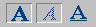
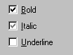
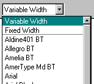
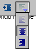

|
|
Editor Widget Requirements
by Charles Manske (cmanske@netscape.com)
Last updated: 3/10/99
The widgets supplied for Seamonkey are described in Widgets
We Need. Slso see XPToolkit:
Cross-Platform UI Toolkit for more widget and UI information. This
document describes requirements and requests for special behavior needed
for the Editor UI. These are classified as "Required" or "Desired" to help
prioritize implementation. We would really like the "desired" items, but
could live without them in the first release.
Form Widgets
Push buttons
Required:
The buttons used on the toolbar need to show an "attribute set" state
(termed "checked" on Windows buttons) and a "mixed" state for attributes
that are set in only part of a text selection.
For example: 
This shows the "set" state for the bold (1st) button, the mixed state for
the italics (2nd) button, and the unset state for underline (3rd) button.
The visual look for the "set" state may be different than the temporary
"pushed down" state seen when a user is holding down on the the button.
This is true for native Windows buttons - the background looks slightly
lighter than the pushed down button state, but we didn't use that in Composer
4.x, and I don't think it is necessary.
This behavior is necessary for toolbar buttons, and not required for
buttons used in dialogs, but it would be nice to have the behavior on all
button types.
Radio button group
No special requirements
Checkbox
Required:
Support for 3-state checkbox needed, again to show the "mixed" attribute
state.
Bold
is show set, Italics is mixed and Underline is not set.
This behavior must be able to be turned on and off at runtime, since
we don't know whether we need a 3-state or 2-state checkbox until we analyze
the attributes in the current selection.
Edit Field
Desired:
Notification when we loose focus from and editbox, to do field validation.
We could do this on the OK, Apply, or change tab (in a tabbed dialog),
but this is more confusing to users, especially if there are many editboxes
in a dialog.
Scrolling Text Field (Multiline Edit field)
No special requirements
Combobox / Popup Menu
Required:
Width of the list/menu part must be able to be set at a value greater
than the parent control. Optimally, width in the list will be set automatically
to accomodate the content of the widest list item.
We need three versions:
-
The combobox acts like a "dropdown list" in Windows jargon, that is, the
closed state only shows a value from the list and is not editable (it is
not an edit field.)
-
The closed state is an edit field so the value can be one that is not contained
in the list.
-
The string in the closed state is not editable, but it's contents can be
set (programatically) to something that is not in the list.
Other features concern the listbox part of the widget, so they also
apply to the listbox:
Listbox (also applies to list portion of combobox)
Required:
Be able to show a checkmark next to one or more list items. This is
used primarily in a list of fonts, but would be useful for other purposes.
Desired:
Be able to add a separator between items. This allows us to group items
as we do with the separator in a menu. Here's what this looks like in Composer
4.5:
The separator is a gray line below "Fixed Width". Note also how the
width of the dropdown list is wider than the parent combobox.
Desired: (close to required?)
Allow an image in the list item. It doesn't have to be fancy, just
an image to the left of some text would be great. Optionally, it would
be great to designate the "checked" state in an image-containing item by
adding a border around the image. This would allow us to construct our
"popup toolbar"
File Picker
Required:
This may not be in the domain of the widget.
We need to be able to set the initial directory before launching the
file picker. The current "default" drive and directory should be saved,
and then restored after using the file picker. If an initial directory
is not supplied, then just bring up the file picker and if the user
changes directory, that becomes the new default. This is important to allow
the user to designate directories for html files, images, etc. and keep
them from interacting among the different uses of the file picker.
Additional Dialog Widgets
Most of the widgets in this category need no Editor-specific
behavior, as they are either new or currently now used, so anything new
would be great! I especially endorse the "Up/Down Arrows" (what we Windows
people call "spin buttons"). These are great for numeric fields so user
can bump a value up or down without having to type. If this is implemented,
I would like to see an "accelerated" mode: If an auxilliary key (Ctrl or
Cmd?) is held down when clicking, the amount of change can be more than
1 unit. The increment that will be used should be a property setable on
the widget.
Our vision for the Color Picker is detailed here.
This also included suggestions for a simpler
version to be used for non-Editor color picking.
Editor-only Widgets
Popup Toolbar
We currently have a toolbar in a couple of places in Composer
(both Web Composer and Message Composer) consisting of image buttons that
appear in a vertical toolbar. It is triggered on the mouse-down message
on a parent toolbar button, so it generally behaves like a popup menu or
combobox, including destruction when user clicks away from the toolbar.
The alignment toolbar is an example: 
It is shown in its expanded state. Note that the buttons show state
-- the "center" alignment is shown.
If the Combobox / Popup Menu supports images and state as described
above, this would be an excellent.
|